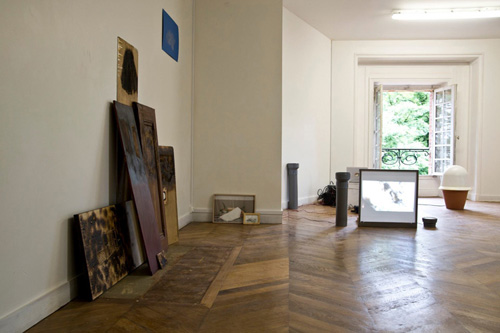
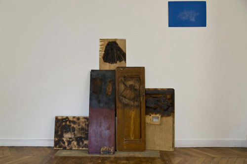
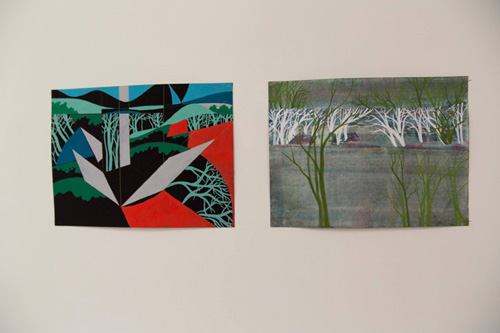
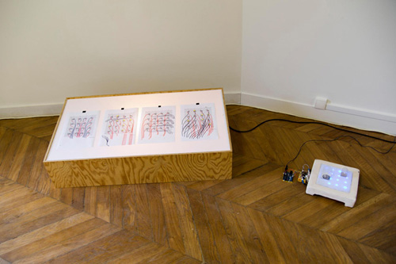

Vue d'exposition, Delphine Chevrot et Nicolas Bralet.
L’équipe du LAAB devient résident de Château Ephémère - fabrique sonore et numérique. Nicolas Bralet, François Collin et Sabrina Issa, au LAAB et sous la forme d’un groupe de recherche, inaugurent de futures collaborations en invitant les propositions
de Delphine Chevrot et Fred Maury.
Au Château Ephémère nous avons fait le choix, sur les durées de création, d’exposer ponctuellement les avancées de notre recherche. Nos pièces conjuguent ainsi les temps de construction et d’exposition, comme étant des temps phénoménologiques,
accessible et publics. Chaque évènement ou exposition est dédiée à l’expressivité d’un mouvement ou d’un phénomène vivant.
Les recherches se font par sessions et la visibilité de ce travail sera envisagée de bout en bout. Les pièces présentées dans cette salle sont autant de pistes lancées, de collaborations à venir ou de projet en cours, elles sont autonomes
et liée par la recherche.

Inventories#, zylogravure in situ et tirage unique au carbon, Delphine Chevrot.

Dessins, Fred Maury.

Schéma de montages et Dance floor, Fred Maury.